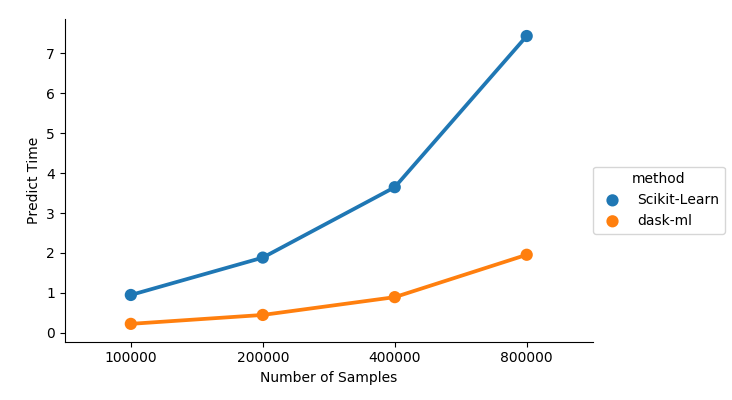

This work is supported by Anaconda Inc and the Data Driven Discovery Initiative from the Moore Foundation.
dask-ml 0.4.1 was released today with a few enhancements. See the changelog for all the changes from 0.4.0.
Conda packages are available on conda-forge
$ conda install -c conda-forge dask-ml
and wheels and the source are available on PyPI
$ pip install dask-ml
I wanted to highlight one change, that touches on a topic I mentioned in my first post on scalable Machine Learning. I discussed how, in my limited experience, a common workflow was to train on a small batch of data and predict for a much larger set of data. The training data easily fits in memory on a single machine, but the full dataset does not.
A new meta-estimator, ParallelPostFit helps with this
common case. It's a meta-estimator that wraps a regular scikit-learn estimator,
similar to how GridSearchCV wraps an estimator. The .fit method is very
simple; it just calls the underlying estimator's .fit method and copies over
the learned attributes. This means ParalellPostFit is not suitable for
training on large datasets. It is, however, perfect for post-fit tasks like
.predict, or .transform.
As an example, we'll fit a scikit-learn GradientBoostingClassifier on a small
in-memory dataset.
>>> from sklearn.ensemble import GradientBoostingClassifier
>>> import sklearn.datasets
>>> import dask_ml.datasets
>>> X, y = sklearn.datasets.make_classification(n_samples=1000,
... random_state=0)
>>> clf = ParallelPostFit(estimator=GradientBoostingClassifier())
>>> clf.fit(X, y)
ParallelPostFit(estimator=GradientBoostingClassifier(...))
Nothing special so far. But now, let's suppose we had a "large" dataset for
prediction. We'll use dask_ml.datasets.make_classifciation, but in practice
you would read this from a file system or database.
>>> X_big, y_big = dask_ml.datasets.make_classification(n_samples=100000,
chunks=1000,
random_state=0)
In this case we have a dataset with 100,000 samples split into blocks of 1,000. We can now predict for this large dataset.
>>> clf.predict(X)
dask.array<predict, shape=(10000,), dtype=int64, chunksize=(1000,)>
Now things are different. ParallelPostFit.predict, .predict_proba, and
.transform, all return dask arrays instead of immediately computing the
result. We've built up task graph of computations to be performed, which allows
dask to step in and compute things in parallel. When you're ready for the
answer, call compute:
>>> clf.predict_proba(X).compute()
array([[0.99141094, 0.00858906],
[0.93178389, 0.06821611],
[0.99129105, 0.00870895],
...,
[0.97996652, 0.02003348],
[0.98087444, 0.01912556],
[0.99407016, 0.00592984]])
At that point the dask scheduler comes in and executes your compute in parallel, using all the cores of your laptop or workstation, or all the machines on your cluster.
ParallelPostFit "fixes" a couple of issues in scikit-learn outside of
scikit-learn itself
If you're able to depend on dask and dask-ml, consider giving ParallelPostFit
a shot and let me know how it turns out. For estimators whose predict is
relatively expensive and not already parallelized, ParallelPostFit can give
a nice performance boost.

Even if the underlying estimator's predict or tranform method is cheap or
parallelized, ParallelPostFit does still help with distributed the work on all
the machines in your cluster, or doing the operation out-of-core.
Thanks to all the contributors who worked on this release.